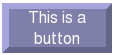
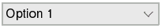
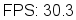
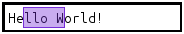
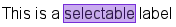
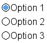
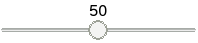
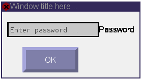
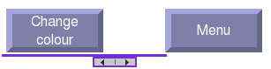
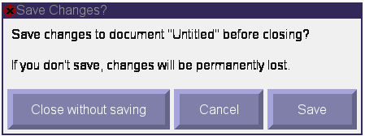

Base widget, all widgets inherit from this.
Bases: pygame.sprite.Sprite
Widget foundations all widgets should inherit from. This can also be used as a simple widget that does nothing, such as displaying an image.
Update widget configuration and redraw the widget.
Add widget to screen.
Remove widget from screen.
Return True if widget is active (onscreen).
Return True if this widget has focus.
Button widget, allows input from the user clicking the button.
Bases: sgc.widgets.base_widget.Simple
A clickable button.
Update widget configuration and redraw the widget.
Called when the button is clicked through either mouse or keyboard.
Emits an event with attribute ‘gui_type’ == “click”.
Override this function to use as a callback handler.
Combo box widget, allows the user to choose an option from a selection.
Bases: sgc.widgets.base_widget.Simple
A combo box.
Update widget configuration and redraw the widget.
Called when the selection is changed.
Emits an event with attribute ‘gui_type’ == “select”, ‘selection’ == index of selection made and ‘value’ == value of selection made.
Override this function to use as a callback handler.
FPS counter, display current FPS performance to the user.
Bases: sgc.widgets.base_widget.Simple
FPS counter
Update widget configuration and redraw the widget.
Toggle the FPS counter, adding or removing this widget.
Input Box for receiving text input.
Bases: sgc.widgets.base_widget.Simple, sgc.widgets._interface.text.SelectableText
Input box
Update widget configuration and redraw the widget.
Called when the user hits the enter key.
Emits an event with attribute ‘gui_type’ == “enter” and ‘text’ with the text entered.
Override this function to use as a callback handler.
Label to display information to the user.
Bases: sgc.widgets.base_widget.Simple, sgc.widgets._interface.text.SelectableText
Label
Update widget configuration and redraw the widget.
Radio Button, allows the user to select a single option from a group.
Bases: sgc.widgets.base_widget.Simple
A selectable radio button.
Update widget configuration and redraw the widget.
Called when the radio button is selected.
Emits an event with attribute ‘gui_type’ == “select”.
Override this function to use as a callback handler.
Clear a group so no radio button is selected.
Scale widget, allows the user to select a value along a scale using a slider.
Bases: sgc.widgets.base_widget.Simple
A scale slider.
Update widget configuration and redraw the widget.
Settings for games, these include:
* CONTROLS* Keymap* Mouse Sensitivity (speed) TODO* DISPLAY* Resolution (width, height) TODO* Fullscreen (bool) TODO
Bases: sgc.widgets.base_widget.Simple
Display the settings for the keymap to the player.
Switch widget, allows the user to change a boolean setting.
Bases: sgc.widgets.base_widget.Simple
A switch widget, allowing the user to select between two states.
Update widget configuration and redraw the widget.
Called when the switch widget is clicked by mouse or keyboard.
Emits an event with attribute ‘gui_type’ == “click” and ‘on’ == (True or False) depending on whether the switch is set to the on position or not.
Override this function to use as a callback handler.
Container widget, can be inherited to implement more complex behaviour.
Bases: sgc.widgets.base_widget.Simple
Container widget. Handles focus and events of a group of widgets packed into a single container.
If surf is not given, container will be the right size to fit all widgets.
Update widget configuration and redraw the widget.
Boxes are container widgets with automatic positioning/padding of widgets.
Bases: sgc.widgets.container.Container
VBox is a container widget which sorts widgets into a vertical structure.
If surf is not given, container will be the right size to fit all widgets.
Update widget configuration and redraw the widget.
Bases: sgc.widgets.container.Container
HBox is a container widget which sorts widgets into a horizontal structure.
If surf is not given, container will be the right size to fit all widgets.
Update widget configuration and redraw the widget.
Dialog window, creates a popup window.
Bases: sgc.widgets.base_widget.Simple
Dialog Window
If surf is not given, window will be large enough to fit the given widget.
Update widget configuration and redraw the widget.
Called when the dialog window is closed.
Emits an event with attribute ‘gui_type’ == “close”.
Override this function to use as a callback handler.
Scroll box. A container widget that provides scroll bars to be able to view a larger widget.
Bases: sgc.widgets.base_widget.Simple
Scroll Box
Update widget configuration and redraw the widget.
Scroll by x and y coordinates.
Common dialog widgets.
Bases: sgc.widgets.dialog.Dialog
This dialog should be called when a user attempts to quit without saving. The dialog will remove itself if the user has cancelled the action.
Update widget configuration and redraw the widget.
Called when the user clicks ‘close without saving’.
Emits an event with attribute ‘gui_type’ == “quit”.
Override this function to use as a callback handler.
Called when the user clicks the save button.
Emits an event with attribute ‘gui_type’ == “save”.
Override this function to use as a callback handler.
Called when the user cancels the action.
Emits an event with attribute ‘gui_type’ == “cancel”.
Override this function to use as a callback handler.